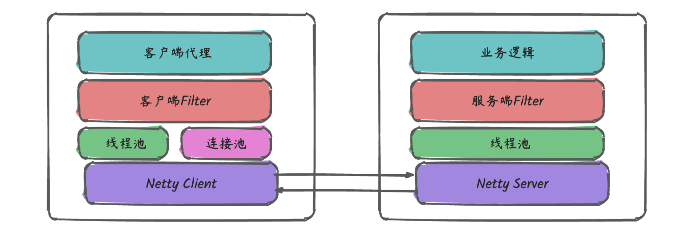
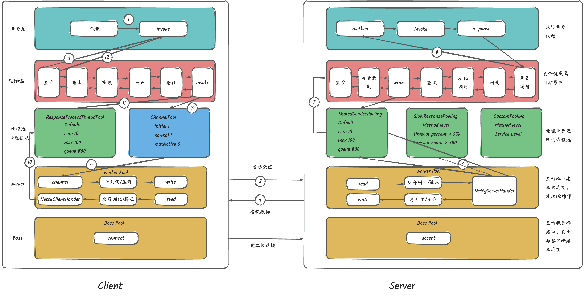

1. 一个RPC调用的执行过程1.1. 概述1.2. Client端1.2.1. 客户端代理1.2.2. 客户端Filter1.2.3. 连接池1.2.4. 线程池1.2.5. Netty Client1.2.5.1. Boss1.2.5.2. Worker1.2.5.3. Pipeline1.3. Server端1.3.1. 服务端Filter1.3.2. 线程池1.3.3. Netty Server1.4. 执行过程2. 一个RPC应该包含什么？注册中心网络传输序列化和反序列化动态代理负载均衡传输协议2. RPC和http有什么区别服务发现底层连接形式传输的内容

分为client端和server端
client端包括：客户端代理，客户端Filter，连接池，业务线程池，NettryClient
RPC要求像调用本地函数一样调用远程函数，所以需要对调用方屏蔽细节。使用代理模式来实现。
代理模式的具体实现，是用责任链模式衔接，为框架提供了高可扩展性。目前Filter包含：服务监控，服务路由，故障注入，服务鉴权，服务降级，服务调用等模块。
连接池的概念是调用端做IO操作时需要创建的对象，线程池是服务单处理业务逻辑时需要创建的对象。Pigeon允许客户端与一个服务端机器建立多个连接
负责在收到服务端返回的数据后，通知（唤醒）业务线程
Pigeon客户端和服务端的通信是交给Netty完成的，而Netty是基于Reactor模型实现的基于时间驱动的网络I/O框架，其包含Boss（Reactor模型中的MainReactor），Worker(Reactor模型中的SubReactor)以及基于Channel的Pipeline。
在客户端中，负责发起connect请求，而在服务端中则负责accept客户端发来的connect请求，客户端和服务端建立连接后，则将相应的连接丢给Worker去维护。
负责轮询连接（I/O多路复用）是否有数据送达，并负责将数据读写到想响应的channel中
负责对Channel中的数据进行加工，在Pigeon中，其主要包含：序列化，反序列化，完整性校验，解压缩。
Server端包括：服务段Filter，业务线程池，NetteyServer。
与客户端Filter对应，一个请求在进入业务代码之间，要经过：服务监控，服务鉴权，服务限流等模块
将业务逻辑从I/O操作中剥离，数据准备好后，，业务代码将在业务线程中执行，在Pigeon中，为了防止慢请求影响其他的正常情况，会将满足一定条件的慢请求隔离到SlowRquestPooling中。
与nettyClient类似。

假设当客户端和服务端建立连接之后，客户端调用远程服务
首先在客户端调用远程服务发放时，真正调用的是InvocationHandler中的invoke方法（这里使用JDK的动态代理）。pigeon中InvocationHandler的实现为ServiceInvocationProxy, 任意方法最终都会进入到ServiceInvocationProxy.invoke方法
ServiceInvocationProxy.invoke中会调用客户端Filter，请求会依次经过监控，路由，降级，网关，鉴权等模块后，进入RemoteCallInvokeFIlter。
在RemoteCallInvokeFIlter中调用Client.write方法，其逻辑从连接池中获取连接（有一个超时时间），然后将数据写入Channel。
在服务端发送数据之前，需要经过Channel的Pipeline（序列化，压缩，减少网络传输的数据量)。
然后就开始向服务端发送数据，由于Netty发送消息是异步的，所以如果是同步调用的话，Pigeon这里会让业务线程主动await，直到收到服务端相应或者超时后唤醒。
服务端收到客户端发送的消息后，从channel中将消息读出来，也会先经过一些Pipeline(反序列化，解压缩等)后到达NettyServerHandler,在其中Pigeon这里还做了服务隔离的设计
默认的隔离机制（统计和隔离级别都是方法级的）：当超时数超过300或者超时率超过5%，就将后续对应的请求放入slow线程池处理。当超时数低于300，或者超时率低于5%，就将后续对应的请求放入shard线程池处理。
默认还开启方法限流，限制单个方法不能占用X个线程
提供业务自定义独立线程池的支持
在选择相应的线程池并成功拿到线程之后，请求就到了服务端Filter中，请求会依次经过监控，流量录制，鉴权，泛化调用，网关等模块，进入BusinessProcessFilter.
在BusinessProcessFilter中会根据客户端传递开的服务信息和参数，通过反射调用相应的业务服务并拿到业务处理结果，然后再WriteRespinseProcessFilter中将返回结果写入channel
返回结果再经过服务端的Pipeline处理（序列化，压缩等），就发给客户端
客户端收到消息后，经过客户端的Pipeline处理（反序列化，解压缩等）后到达NettyClientHandle，然后交给ResponseThreadPoolProcessor线程池处理。
ResponseThreadPoolProcessor收到消息后，会通知之前await的业务线程，并将结果传递给他
业务线程收到signal通知后，就将结果返回给之前的方法调用。
在一个典型 RPC 的使用场景中，包含了服务发现、负载、容错、网络传输、序列化等组件，其中“RPC 协议”就指明了程序如何进行网络传输和序列化。
注册中心 ：注册中心负责服务地址的注册与查找，相当于目录服务。
网络传输 ：既然我们要调用远程的方法，就要发送网络请求来传递目标类和方法的信息以及方法的参数等数据到服务提供端。
序列化和反序列化 ：要在网络传输数据就要涉及到序列化。
动态代理 ：屏蔽程方法调用的底层细节。
负载均衡 ： 避免单个服务器响应同一请求，容易造成服务器宕机、崩溃等问题。
传输协议 ：这个协议是客户端（服务消费方）和服务端（服务提供方）交流的基础。
注册中心首先是要有的。比较推荐使用 Zookeeper 作为注册中心。 ZooKeeper 为我们提供了高可用、高性能、稳定的分布式数据一致性解决方案，通常被用于实现诸如数据发布/订阅、负载均衡、命名服务、分布式协调/通知、集群管理、Master 选举、分布式锁和分布式队列等功能。并且，ZooKeeper 将数据保存在内存中，性能是非常棒的。 在“读”多于“写”的应用程序中尤其地高性能，因为“写”会导致所有的服务器间同步状态。（“读”多于“写”是协调服务的典型场景）。
注册中心负责服务地址的注册与查找，相当于目录服务。 服务端启动的时候将服务名称及其对应的地址(ip+port)注册到注册中心，服务消费端根据服务名称找到对应的服务地址。有了服务地址之后，服务消费端就可以通过网络请求服务端了。
调用关系说明：
服务容器负责启动，加载，运行服务提供者。
服务提供者在启动时，向注册中心注册自己提供的服务。
服务消费者在启动时，向注册中心订阅自己所需的服务。
注册中心返回服务提供者地址列表给消费者，如果有变更，注册中心将基于长连接推送变更数据给消费者。
服务消费者，从提供者地址列表中，基于软负载均衡算法，选一台提供者进行调用，如果调用失败，再选另一台调用。
服务消费者和提供者，在内存中累计调用次数和调用时间，定时每分钟发送一次统计数据到监控中心。
既然我们要调用远程的方法，就要发送网络请求来传递目标类和方法的信息以及方法的参数等数据到服务提供端。
网络传输具体实现你可以使用 Socket （ Java 中最原始、最基础的网络通信方式。但是，Socket 是阻塞 IO、性能低并且功能单一）。
你也可以使用同步非阻塞的 I/O 模型 NIO ，但是用它来进行网络编程真的太麻烦了。不过没关系，你可以使用基于 NIO 的网络编程框架 Netty ，它将是你最好的选择！
Netty 是一个基于 NIO 的 client-server(客户端服务器)框架，使用它可以快速简单地开发网络应用程序。
它极大地简化了 TCP 和 UDP 套接字服务器等网络编程，并且性能以及安全性等很多方面甚至都要更好。
支持多种协议如 FTP，SMTP，HTTP 以及各种二进制和基于文本的传统协议。
要在网络传输数据就要涉及到序列化。为什么需要序列化和反序列化呢？ 因为网络传输的数据必须是二进制的。因此，我们的 Java 对象没办法直接在网络中传输。为了能够让 Java 对象在网络中传输我们需要将其序列化为二进制的数据。我们最终需要的还是目标 Java 对象，因此我们还要将二进制的数据“解析”为目标 Java 对象，也就是对二进制数据再进行一次反序列化。
另外，不仅网络传输的时候需要用到序列化和反序列化，将对象存储到文件、数据库等场景都需要用到序列化和反序列化。
JDK 自带的序列化，只需实现 java.io.Serializable接口即可，不过这种方式不推荐，因为不支持跨语言调用并且性能比较差。
现在比较常用序列化的有 hessian、kyro、protostuff ......。我会在下一篇文章中简单对比一下这些序列化方式。
我们知道代理模式就是： 我们给某一个对象提供一个代理对象，并由代理对象来代替真实对象做一些事情。你可以把代理对象理解为一个幕后的工具人。 举个例子：我们真实对象调用方法的时候，我们可以通过代理对象去做一些事情比如安全校验、日志打印等等。但是，这个过程是完全对真实对象屏蔽的。
讲完了代理模式，再来说动态代理在 RPC 框架中的作用。
前面第一节的时候，我们就已经提到 ：RPC 的主要目的就是让我们调用远程方法像调用本地方法一样简单，我们不需要关心远程方法调用的细节比如网络传输。
怎样才能屏蔽程方法调用的底层细节呢？
答案就是动态代理。简单来说，当你调用远程方法的时候，实际会通过代理对象来传输网络请求，不然的话，怎么可能直接就调用到远程方法。
负载均衡也是需要的。为啥？
举个例子：我们的系统中的某个服务的访问量特别大，我们将这个服务部署在了多台服务器上，当客户端发起请求的时候，多台服务器都可以处理这个请求。那么，如何正确选择处理该请求的服务器就很关键。假如，你就要一台服务器来处理该服务的请求，那该服务部署在多台服务器的意义就不复存在了。负载均衡就是为了避免单个服务器响应同一请求，容易造成服务器宕机、崩溃等问题，我们从负载均衡的这四个字就能明显感受到它的意义。
首先要向某个服务器发起请求，你得先建立连接，而建立连接的前提是，你得知道 IP 地址和端口 。这个找到服务对应的 IP 端口的过程，其实就是 服务发现。
在 HTTP 中，你知道服务的域名，就可以通过 DNS 服务 去解析得到它背后的 IP 地址，默认 80 端口。
而 RPC 的话，就有些区别，一般会有专门的中间服务去保存服务名和 IP 信息，比如 Consul、Etcd、Nacos、ZooKeeper，甚至是 Redis。想要访问某个服务，就去这些中间服务去获得 IP 和端口信息。由于 DNS 也是服务发现的一种，所以也有基于 DNS 去做服务发现的组件，比如 CoreDNS。
可以看出服务发现这一块，两者是有些区别，但不太能分高低。
以主流的 HTTP1.1 协议为例，其默认在建立底层 TCP 连接之后会一直保持这个连接（keep alive），之后的请求和响应都会复用这条连接。
而 RPC 协议，也跟 HTTP 类似，也是通过建立 TCP 长链接进行数据交互，但不同的地方在于，RPC 协议一般还会再建个 连接池，在请求量大的时候，建立多条连接放在池内，要发数据的时候就从池里取一条连接出来，用完放回去，下次再复用，可以说非常环保。
由于连接池有利于提升网络请求性能，所以不少编程语言的网络库里都会给 HTTP 加个连接池，比如 Go 就是这么干的。
可以看出这一块两者也没太大区别，所以也不是关键。
基于 TCP 传输的消息，说到底，无非都是 消息头 Header 和消息体 Body。
Header 是用于标记一些特殊信息，其中最重要的是 消息体长度。
Body 则是放我们真正需要传输的内容，而这些内容只能是二进制 01 串，毕竟计算机只认识这玩意。所以 TCP 传字符串和数字都问题不大，因为字符串可以转成编码再变成 01 串，而数字本身也能直接转为二进制。但结构体呢，我们得想个办法将它也转为二进制 01 串，这样的方案现在也有很多现成的，比如 JSON，Protocol Buffers (Protobuf) 。
这个将结构体转为二进制数组的过程就叫 序列化 ，反过来将二进制数组复原成结构体的过程叫 反序列化。
对于主流的 HTTP1.1，虽然它现在叫超文本协议，支持音频视频，但 HTTP 设计 初是用于做网页文本展示的，所以它传的内容以字符串为主。Header 和 Body 都是如此。在 Body 这块，它使用 JSON 来 序列化 结构体数据。
可以看到这里面的内容非常多的冗余，显得非常啰嗦。最明显的，像 Header 里的那些信息，其实如果我们约定好头部的第几位是 Content-Type，就不需要每次都真的把 Content-Type 这个字段都传过来，类似的情况其实在 Body 的 JSON 结构里也特别明显。
而 RPC，因为它定制化程度更高，可以采用体积更小的 Protobuf 或其他序列化协议去保存结构体数据，同时也不需要像 HTTP 那样考虑各种浏览器行为，比如 302 重定向跳转啥的。因此性能也会更好一些，这也是在公司内部微服务中抛弃 HTTP，选择使用 RPC 的最主要原因。
当然上面说的 HTTP，其实 特指的是现在主流使用的 HTTP1.1，HTTP2在前者的基础上做了很多改进，所以 性能可能比很多 RPC 协议还要好，甚至连gRPC底层都直接用的HTTP2。